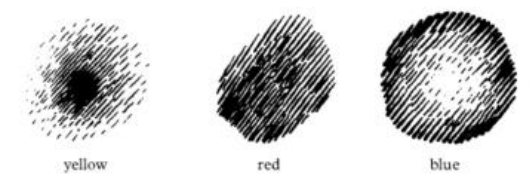

Image and lustre: three ways a colour spreads
Compare yellow, blue and red through centre, edge and balance.
Explore the chapter’s core ideas
The reading’s key idea
The second lecture adds lustre colours: yellow as the lustre of spirit, blue as the lustre of soul, and red as the lustre of life. Lustre names an expressive shining or appearing, not simply a glossy surface. The four image colours present a more image-like relation; the three lustre colours are approached through tendencies of movement and distribution.
Steiner describes yellow as strongest at a centre and radiating outward, blue as gathering from a strong boundary toward a lighter centre, and red as balancing itself across a surface. When he speaks of what a colour “wants,” read this as a way of directing artistic attention. A pigment has no literal intention. Nor do these arrangements define every successful use of yellow, blue or red. His discussion of yellow and blue producing green should not be turned into a universal rule for mixing coloured light and every kind of paint.
The book’s three colour gestures

Colour · Lecture 2, 7 May 1921 · GA 291 · supplied PDF page 26.
Source excerpt, cropped without redrawing or recolouring. PDF capture pagination, not verified printed pagination. This is the diagram as reproduced in the edition; it is not identified here as a surviving original blackboard.
The hatching indicates how strongly to place the named colour. Yellow is concentrated in the centre and fades outwards; red holds a more even surface; blue is stronger at the boundary and lighter within. These are the contrasting painting gestures described in the adjacent passage.
The supplied reproduction is monochrome. Its black marks stand for colour intensity, not for black pigment to add to yellow, red or blue. Compare it with the labelled digital study below, then try the relationships in watercolour.
Compare the arrangements
Original digital studies, not reproductions of the book’s drawings. Captions describe each arrangement; you can use the descriptions for the activity. Screens, materials and individual perception affect appearance. Record differences from the proposed experience too.
Words for the reading
Lustre: expressive shining in Steiner’s vocabulary. Centre, boundary and transition describe the arrangement. A wash is a relatively fluid layer of colour.
Read the source with the concepts in mind
Rudolf Steiner · Colour · 1992 translation · John Salter · Lecture 2 in the supplied collection
Yellow, blue and red have a lustre-character — something shines from them.
Selected excerpt from the supplied English edition; Brazilian Portuguese is a new course translation. Line breaks normalized.
Open the source or edition index →
What this passage means
Lustre names an active radiating quality, contrasted with an image of something. The lecture differentiates how yellow, blue and red want to spread; compare those directions in the studies below.
The focus of this lesson
Compare yellow, blue and red through centre, edge and balance.
Change one thing, look again
Compare two distributions of the same hue. Describe where your attention goes before reading Steiner’s account. These are original digital studies; screen appearance varies. Use the captions if you prefer a verbal comparison.
Keep the hue fixed first. Swap only the distribution. Then try blue. A different response—or no clear difference—is useful evidence about your experience.
See the idea in an example
A yellow wash fades toward the edge. Beside it, a blue wash is pale inside and denser outside. A red field maintains a more even distribution.
You can now compare how colour is spread rather than merely list three hues. The digital studies below illustrate these arrangements; they are not reproductions of the book’s drawings.
Explain the idea and its reasoning
Define the central concept in ordinary language. Explain why the author introduces it, what it distinguishes, and how the passage supports that explanation. Then connect it to this lesson’s focus: Compare yellow, blue and red through centre, edge and balance.
A hint if you need one
Read the passage and its explanation again. Identify what the author connects or distinguishes. Explain that relationship before applying it to your own example.
Your text stays in this page unless you enable saving.
Find the connection in the reading
Return to the passage at the top. Identify the words that support your explanation and give the source reference. If you have the book, read the surrounding section and add one point that the short excerpt leaves out.
Work with the idea
Paint or describe these three studies. Then reverse one arrangement: put the strongest yellow at the edge. Compare the two versions and explain what the reversal changes in your experience.
Check your understanding
How does the proposed blue study differ from the yellow one?
Show a suggested answer
Yellow radiates from a stronger centre; blue gathers from stronger edges toward a lighter centre. These are proposed artistic tendencies, not mandatory experiences or physical laws.
How does the example help you understand the reading?
Show a suggested answer
You can now compare how colour is spread rather than merely list three hues. The digital studies below illustrate these arrangements; they are not reproductions of the book’s drawings.
What would a well-supported response to the activity include?
Show a suggested answer
Compare the original centre-to-edge yellow transition with the reversed one. Describe a difference in emphasis or movement, or state that none was clear. Do not label one study morally better.
How to assess your response
Check four things: correct attribution, a clear distinction, a reason supported by the reading and recognition of the example’s limits. Revisit anything vague. Reasoned disagreement can demonstrate understanding; agreement and reports of spiritual experiences are not required.
What changed in your understanding?
Try the reversed arrangement with blue. Keep size and lighting as constant as possible. Compare your own observations before consulting the author’s account; disagreement is not a wrong answer.
Compare with your first attempt
Your first attempt appears here when JavaScript is available. You can also scroll back to it.
Before marking this lesson studied: explain the idea in your own words, point to the passage, and name a limit of the example. Use the suggested answers above to check your reasoning.